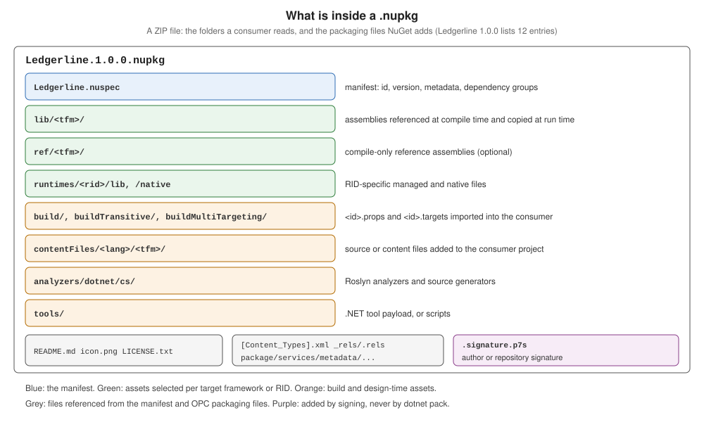

Creating Packages with dotnet pack
|
This content was generated with the assistance of AI and should be verified against the official documentation before being relied on in production. |
dotnet pack builds a project and runs NuGet’s Pack MSBuild target, which turns the project’s properties and
items into a .nuspec manifest and a .nupkg file. Everything a package contains is decided by MSBuild properties and
items, so a package is reproducible from the project file alone. This page walks through the target with .NET SDK
10.0.402 (NuGet 7.9.0), on the Ledgerline scenario. Metadata (README, icon, licence) has its own page,
Package Metadata, README, Icon and License.
What is inside a .nupkg

A .nupkg is a ZIP file. Packing Ledgerline:
dotnet pack src/Ledgerline -o artifacts/pkg
unzip -l artifacts/pkg/Ledgerline.1.0.0.nupkg Ledgerline -> .../src/Ledgerline/bin/Release/netstandard2.0/Ledgerline.dll
Ledgerline -> .../src/Ledgerline/bin/Release/net10.0/Ledgerline.dll
Ledgerline -> .../src/Ledgerline/bin/Release/net8.0/Ledgerline.dll
Successfully created package '.../artifacts/pkg/Ledgerline.1.0.0.nupkg'.
Length Date Time Name
--------- ---------- ----- ----
473 2026-10-23 20:18 _rels/.rels
1260 2026-10-23 20:18 Ledgerline.nuspec
297 2026-10-23 20:18 README.md
680 2026-10-23 20:18 icon.png
13312 2026-10-23 20:18 lib/net10.0/Ledgerline.dll
5471 2026-10-23 20:18 lib/net10.0/Ledgerline.xml
13312 2026-10-23 20:18 lib/net8.0/Ledgerline.dll
5471 2026-10-23 20:18 lib/net8.0/Ledgerline.xml
13824 2026-10-23 20:18 lib/netstandard2.0/Ledgerline.dll
5471 2026-10-23 20:18 lib/netstandard2.0/Ledgerline.xml
644 2026-10-23 20:18 [Content_Types].xml
775 2026-10-23 20:18 package/services/metadata/core-properties/nuget.psmdcp
--------- -------
60990 12 filesdotnet pack builds in Release by default since the .NET 8 SDK (PackRelease). Each target framework’s build
output goes to lib/<tfm>/, with the XML documentation file when GenerateDocumentationFile is set; _rels/,
[Content_Types].xml and package/services/metadata/ are Open Packaging Conventions files that NuGet writes and
reads but nobody edits.
The .nuspec at the root of the ZIP is the manifest that Pack generated from the project; nobody wrote it by hand.
Unzipping it from the same package:
unzip -p artifacts/pkg/Ledgerline.1.0.0.nupkg Ledgerline.nuspec<?xml version="1.0" encoding="utf-8"?>
<package xmlns="http://schemas.microsoft.com/packaging/2013/05/nuspec.xsd">
<metadata>
<id>Ledgerline</id>
<version>1.0.0</version>
<authors>Ledgerline contributors</authors>
<license type="expression">MIT</license>
<licenseUrl>https://licenses.nuget.org/MIT</licenseUrl>
<icon>icon.png</icon>
<readme>README.md</readme>
<projectUrl>https://example.com/ledgerline</projectUrl>
<description>Double-entry bookkeeping ledgers: read journal CSV files, check that every entry balances and export a trial balance as JSON.</description>
<copyright>Copyright (c) Ledgerline contributors</copyright>
<tags>ledger accounting double-entry trial-balance csv</tags>
<repository type="git" url="https://example.com/ledgerline/ledgerline" commit="e33226ff8326b40770b01db9cc78bfd2d7044fc8" />
<dependencies>
<group targetFramework="net10.0" />
<group targetFramework="net8.0" />
<group targetFramework=".NETStandard2.0">
<dependency id="Microsoft.Bcl.HashCode" version="6.0.0" exclude="Build,Analyzers" />
<dependency id="System.Text.Json" version="10.0.13" exclude="Build,Analyzers" />
</group>
</dependencies>
</metadata>
</package>Every element comes from the project: id from PackageId, version from PackageVersion, license, icon and
readme from the metadata properties, repository from RepositoryUrl and RepositoryType plus the commit that
Source Link added, and one dependency group per target framework from the PackageReference items — empty for
net10.0 and net8.0, which need neither package. The exclude values come from the default PrivateAssets,
covered below.
Source: Pack target inputs, .nuspec reference.
The Pack target’s properties
| Property | Effect |
|---|---|
|
|
|
Pack on every build. |
|
Defaults to |
|
|
|
Where the |
|
|
|
Folder for the build output instead of |
|
Generates no dependency groups. |
|
Marks the package as development-only: |
|
Whether |
|
Skips the |
|
The oldest NuGet client allowed to install the package. |
|
|
dotnet build src/Ledgerline -c Release -p:GeneratePackageOnBuild=true -p:PackageOutputPath=$PWD/artifacts/gpob
dotnet pack src/Ledgerline -o artifacts/v --version 1.2.3-rc.1 Successfully created package '.../artifacts/gpob/Ledgerline.1.0.0.nupkg'.
Successfully created package '.../artifacts/v/Ledgerline.1.2.3-rc.1.nupkg'.--version is new in the .NET 10 SDK ("The version of the package to create" in dotnet pack --help); --version-suffix sets
VersionSuffix (Versioning and Prerelease Packages).
Dependencies: package and project references
Every PackageReference becomes a <dependency> in the group of its target framework, with exclude listing the
assets the consumer should not get (Build,Analyzers by default — the PrivateAssets defaults). A
ProjectReference to another packable project becomes a dependency on that project’s package, with its version.
A reference with PrivateAssets="all" is left out. Ledgerline.Reports references the Ledgerline project and the
build-time-only MinVer package:
<ItemGroup>
<ProjectReference Include="..\Ledgerline\Ledgerline.csproj" />
<PackageReference Include="MinVer" PrivateAssets="all" />
</ItemGroup><dependencies>
<group targetFramework="net10.0">
<dependency id="Ledgerline" version="1.0.0" exclude="Build,Analyzers" />
</group>
</dependencies>version="1.0.0" means "1.0.0 or later". A project reference to a project with IsPackable=false would still be
listed as a dependency, on a package that never gets published — the classic broken package. A test with a
non-packable NP project produced <dependency id="NP" version="1.0.0" ... /> without any warning. Either make it
packable or include its assembly in this package.
Including files
Any item with Pack="true" is packed; PackagePath says where. Content items with PackageCopyToOutput="true"
under contentFiles/ are copied to the consumer’s output folder:
<ItemGroup>
<None Include="LICENSE-THIRD-PARTY" Pack="true" PackagePath="" />
<Content Include="report-template.html" Pack="true" PackagePath="contentFiles/any/any/" PackageCopyToOutput="true" />
</ItemGroup>Ledgerline.Reports.nuspec
README.md
icon.png
LICENSE-THIRD-PARTY
contentFiles/any/any/report-template.html
lib/net10.0/Ledgerline.Reports.dlland the manifest gains
<contentFiles>
<files include="any/any/report-template.html" buildAction="Content" copyToOutput="true" />
</contentFiles>PackageFlatten drops the source folder structure. NuGet and MSBuild treat a path without an extension as a
folder, so a file such as LICENSE-THIRD-PARTY needs PackagePath="" (the package root), as the reference shows;
the result is the file at the root, above. Files and folders starting with . are excluded from wildcards
unless NoDefaultExcludes is true (NU5119 when nuget pack finds one); an item that names a dot-folder explicitly,
such as .config/settings.json, was packed without a warning.
dotnet pack, msbuild -t:pack and the other tools
dotnet msbuild src/Ledgerline -t:pack -p:Configuration=Release -p:PackageOutputPath=$PWD/artifacts/msb Successfully created package '.../artifacts/msb/Ledgerline.1.0.0.nupkg'.dotnet pack is msbuild -restore -t:pack with Configuration=Release; msbuild -t:pack needs a restore first and
the configuration given explicitly. In Visual Studio, Pack on the project’s context menu runs the same target.
nuget pack of an SDK-style project is not supported (NU5049); nuget pack remains for .nuspec-only packages.
Packing a .nuspec, and file-based apps
The .nuspec is the legacy way to describe a package; the project properties replace it. A project can still pack a
hand-written one with NuspecFile, passing $token$ values through NuspecProperties:
<PropertyGroup>
<TargetFramework>net10.0</TargetFramework>
<Version>2.0.0</Version>
<NuspecFile>Ledgerline.Legacy.nuspec</NuspecFile>
<NuspecProperties>version=$(Version);configuration=$(Configuration)</NuspecProperties>
</PropertyGroup>The order matters: with <Version> written after NuspecProperties, $(Version) was still empty when MSBuild
evaluated the line, and pack failed with error : Version is required.; passing
-p:NuspecProperties="version=2.0.0;configuration=Release" on the command line, or moving <Version> up, worked.
NuspecBasePath sets the folder that <file src> paths are relative to. Owners and Summary exist only in the
.nuspec.
The .NET 10 SDK can also pack a .nuspec directly (dotnet pack Ledgerline.Legacy.nuspec) and a file-based app:
#:property PackAsTool=true
#:property ToolCommandName=ledger-hello
#:property PackageId=Ledgerline.Hello
#:property Version=0.1.0
Console.WriteLine("Hello from a file-based tool");$ dotnet pack ledger-hello.cs -o out
Successfully created package '.../out/Ledgerline.Hello.0.1.0.nupkg'.Advanced extension points
Two properties name targets that the Pack target calls once per target framework, to add files with
TfmSpecificPackageFile items:
-
TargetsForTfmSpecificBuildOutput— add files to the build output (for example extra assemblies tolib/). -
TargetsForTfmSpecificContentInPackage— add any file to any folder.
Ledgerline.Build uses the second to put its task assembly in tasks/:
<PropertyGroup>
<IncludeBuildOutput>false</IncludeBuildOutput>
<TargetsForTfmSpecificContentInPackage>$(TargetsForTfmSpecificContentInPackage);_AddTaskAssembly</TargetsForTfmSpecificContentInPackage>
</PropertyGroup>
<Target Name="_AddTaskAssembly">
<ItemGroup>
<TfmSpecificPackageFile Include="$(TargetPath)" PackagePath="tasks/$(TargetFramework)" />
</ItemGroup>
</Target>Errors and warnings
Each reproduced with a one-file project on SDK 10.0.402:
error NU5017: Cannot create a package that has no dependencies nor content.
error NU5026: The file 'NoBuild/bin/Release/net10.0/NoBuild.dll' to be packed was not found on disk.
warning NU5100: The assembly 'other/Other.dll' is not inside the 'lib' folder and hence it won't be added as a reference when the package is installed into a project. Move it into the 'lib' folder if it needs to be referenced.
warning NU5104: A stable release of a package should not have a prerelease dependency. Either modify the version spec of dependency "Ledgerline.Preview [1.0.0-beta.1, )" or update the version field in the nuspec.
warning NU5118: File '.../Dup/b/x.txt' is not added because the package already contains file 'content/x.txt'
warning NU5128: Some target frameworks declared in the dependencies group of the nuspec and the lib/ref folder do not have exact matches in the other location. Consult the list of actions below:
warning NU5128: - Add a dependency group for net8.0 to the nuspec-
NU5017 —
IncludeBuildOutput=falsewith nothing else to pack. -
NU5026 —
dotnet pack --no-buildbefore a build. -
NU5100 — an assembly packed outside
lib/; expected for task and tool packages, which suppress it. -
NU5104 — a stable version depending on a prerelease (Versioning).
-
NU5118 — two items with the same
PackagePath; the second is dropped. -
NU5128 —
lib/orref/folders and dependency groups that don’t match, typical of tool, task and analyzer packages withIncludeBuildOutput=false; suppress it there withNoWarn.
The full list is on Pack and Push Errors.
Testing the package before publishing
Install it from a folder before pushing anywhere: point a test project’s nuget.config at the output folder (with
source mapping for the package ID), restore with --no-http-cache, and build. The net8.0 and net48 consumers of
Ledgerline on Package Layout and Multi-Targeting
do exactly that.
Source: Test package installation.
Common mistakes
-
Packing tests and samples — set
IsPackable=falseby default and opt libraries in. -
A project reference to a non-packable project — a dependency on a package that does not exist.
-
PackageReferenceto a build-time tool withoutPrivateAssets="all"— every consumer inherits it. -
Properties that reference properties defined later — empty values in
NuspecPropertiesand elsewhere. -
--no-buildafter changing code — the old assemblies are packed.